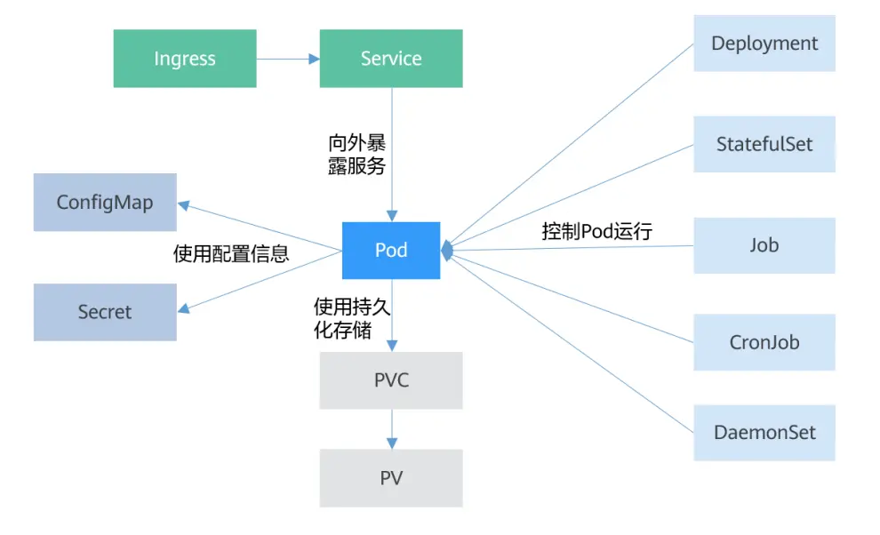

Basic Kubernetes Objects

Pod Is the Smallest Unit Kubernetes Creates or Deploys
A Pod encapsulates one or more containers, storage resources (volumes), an independent network IP, and the policy options that govern how the containers run.
Deployment Is a Service-Oriented Wrapper Around Pods
A Deployment can contain one or more Pods. Every Pod has the same role, so the system automatically distributes requests across the Deployment's Pods.
StatefulSet Is the Object for Managing Stateful Applications
Like a Deployment, a StatefulSet manages a set of Pods based on the same container definition. Unlike a Deployment, a StatefulSet maintains a fixed name for each of its Pods. The Pods are created from the same declaration but are not interchangeable; no matter how they are scheduled, each Pod has a permanent, unchanging name.
Job Is the Object for Controlling Batch Tasks
The main difference between batch business and long-running serving business (Deployment) is that a batch job has a beginning and an end, while a long-running serving job runs forever unless the user stops it.
The Pods a Job manages exit automatically once the task completes successfully according to the user's settings, and the Pods are deleted automatically.
CronJob Is a Time-Controlled Job
Similar to the Linux crontab, it runs a specified task on a specified time cycle.
DaemonSet Is an Object (a Daemon)
It runs a Pod on every node in the cluster and guarantees exactly one, which makes it well suited to system-level applications such as log collection and resource monitoring. Such applications need to run on every node and do not need many instances; a good example is Kubernetes' own kube-proxy.
Service Solves the Problem of Accessing Pods
A Service has a fixed IP address. The Service forwards access traffic to Pods, and it can load balance across those Pods.
Ingress Routing and Forwarding
A Service forwards at layer 4, based on TCP and UDP, while Ingress can forward at layer 7, based on HTTP and HTTPS, allowing finer-grained division by domain name and path.
ConfigMap Is a Resource Type for Storing the Configuration an Application Needs
It holds configuration data as key-value pairs, making it easy to decouple configuration so that different environments have different configuration.
Secret Is an Encrypted Storage Resource Object
Authentication information, certificates, and private keys can be kept in a Secret rather than exposed in an image or a Pod definition, which is both safer and more flexible.
PersistentVolume (PV)
A PV defines a piece of persistent storage, such as a mounted NFS directory.
PersistentVolumeClaim (PVC)
Kubernetes provides PVC specifically for requesting persistent storage. A PVC lets you ignore how the underlying storage resource is created and released, and simply declare what type of storage resource you need and how much space.